Product strategy · mobile deck
The George Org
Three directions for d-Tech
GPT agents pressure-tested the bets. Grok agents built each demo in a silo. Swipe through screenshots, then open the live prototypes.
Swipe up
Care Trials
Turn recurring care problems into short, reversible home trials — then grow the winners into product variants.
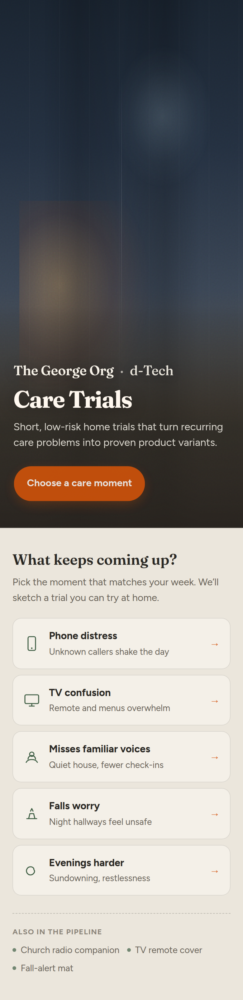
Care Trials · flow
From moment to evidence
Problem portrait → trial recipe → check-in → family learning → George’s workbench.
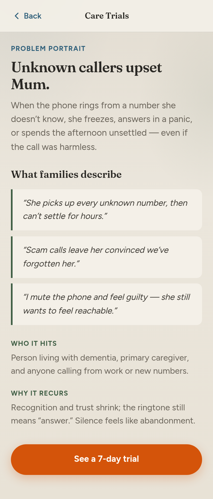
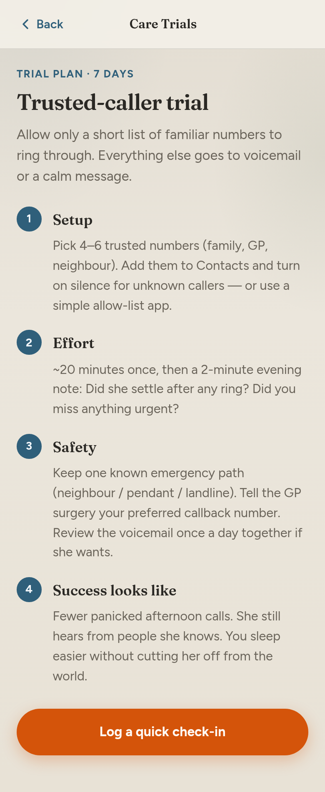
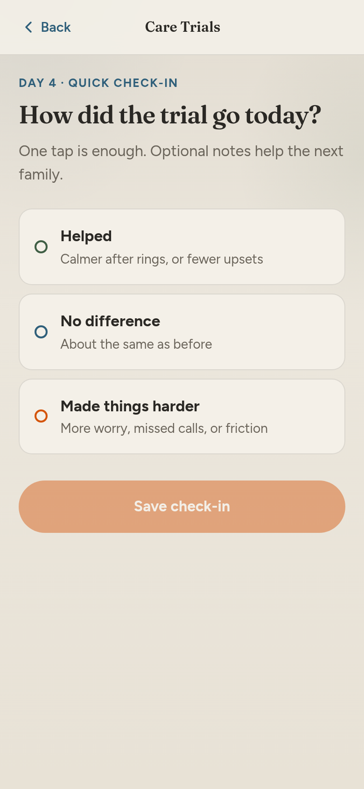
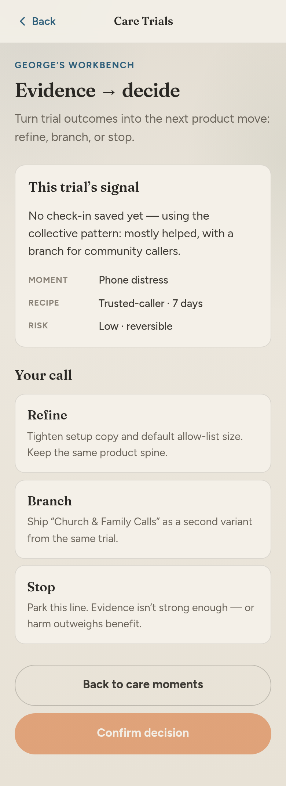
This Week at Home
A weekly shared problem. Sixty seconds of lived experience. Visible progress toward home testing.
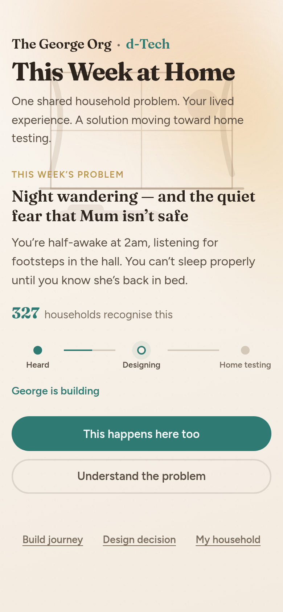
This Week at Home · flow
Recognition → decision → journey
Problem room, one-minute check-in, concept vote, and household follow list.
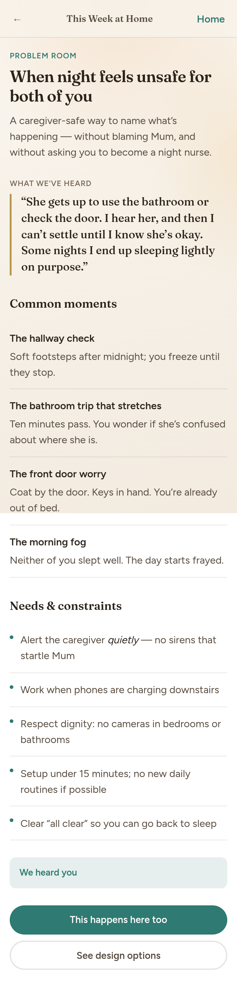
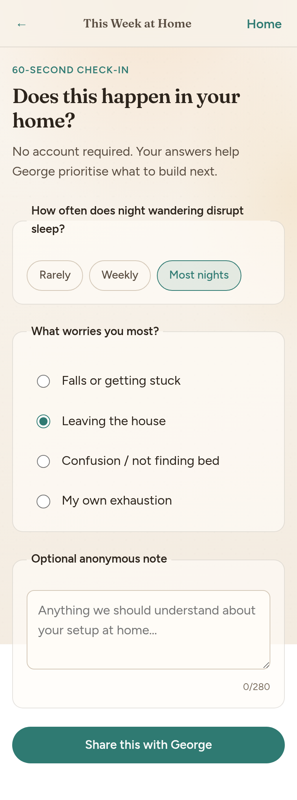
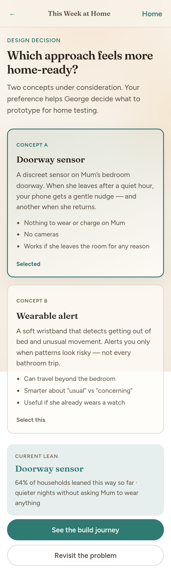
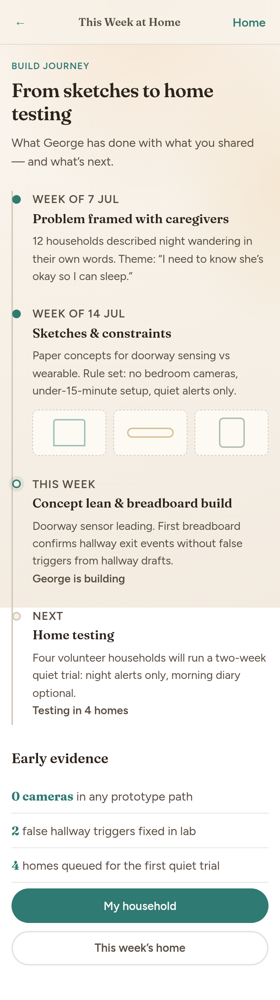
Care Build Foundry
George’s build OS: ranked problems, Grok proposals you approve, variant branches, and costed prototype kits.
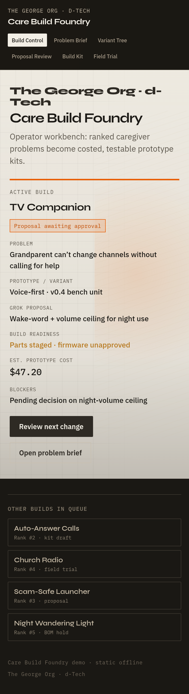
Care Build Foundry · flow
Proposal → kit → field
Variant tree, Grok review, BOM, and trial promotion for TV Companion.
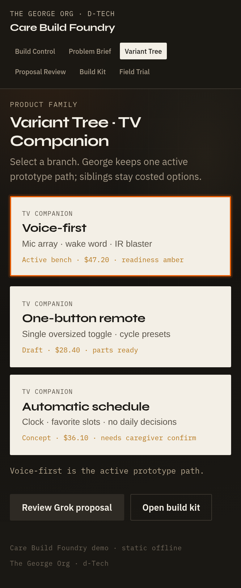
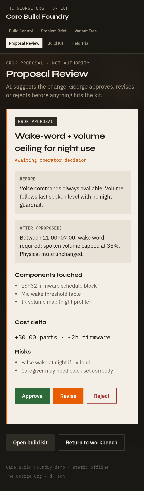
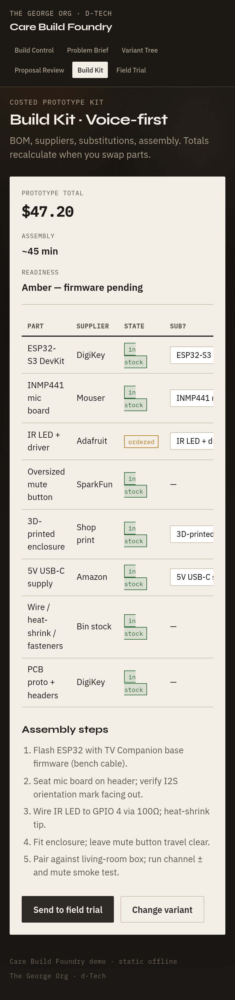
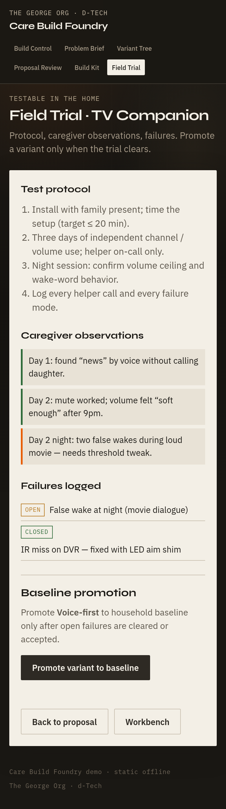
How to choose
Same research spine. Three product faces.
All three keep Terra’s rule: the caregiver problem is the durable unit. They differ in who the first viewport serves.